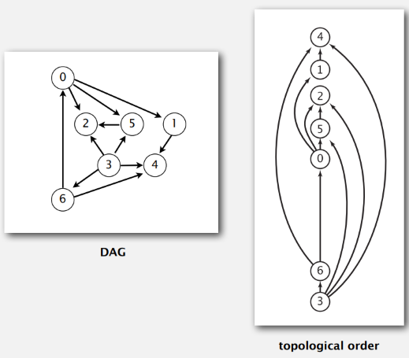
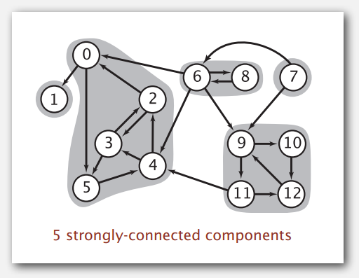
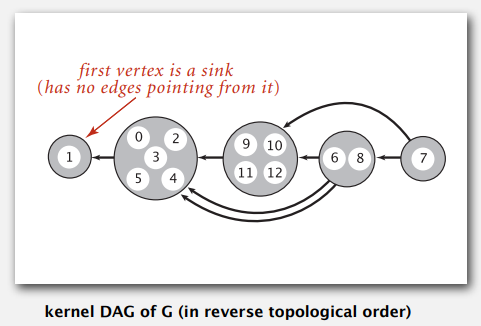
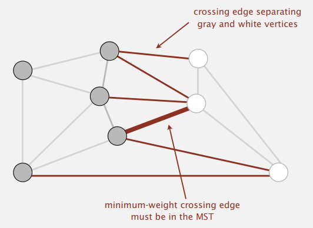
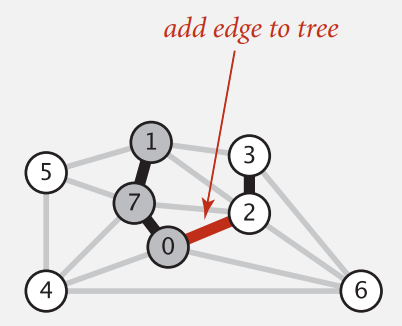
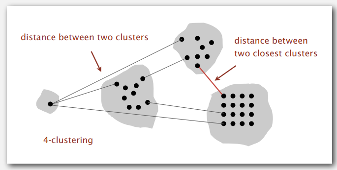
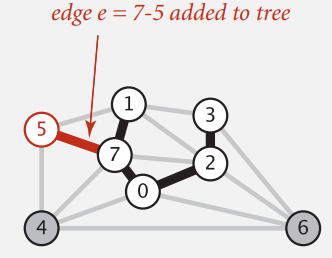
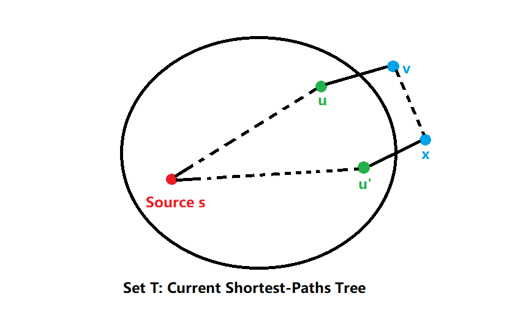
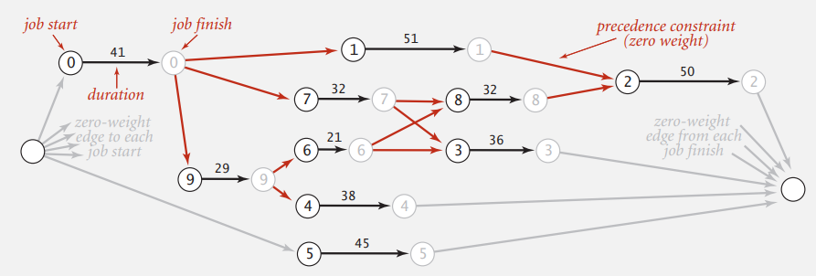

Algorithms II, Princeton University, P5
书接上文，我们进入了本系列课程的第 II Part。本节侧重于图论方面的知识，介绍了：
- 一些基本概念 (
终于知道 BFS 中的 B 是什么了)- Undirected Graphs, Directed Graphs (Digraphs), Directed Acyclic Graphs (DAG).
- Depth-First Search (DFS), Breadth-First Search (BFS), Topological Sort.
- Shortest Path Algorithms.
- Minimum Spanning Trees (MSTs).
- Connected Component, Strong (Connected) Component.
This article is a self-administered course note.
It will NOT cover any exam or assignment related content.
Graph Terminology
图论概念的中英文对照表：这些概念的介绍将被省去，因为实在是太过基础了。
- Graph. Set of vertices (顶点) connected pairwise by edges (边).
- Path. Sequence of vertices connected by edges.
- Cycle. Path whose first and last vertices are the same.
- Directed graphs (Digraph). Set of vertices connected pairwise by directed edges.
Cycle-related problems.
- Is there a cycle in the graph?
- Euler tour (欧拉回路): It there a cycle that uses each edge exactly once.
- Hamilton tour (哈密顿回路): Is there a cycle that uses each vertex exactly once.
Connectivity problems.
- Connectivity. Is there a way to connect all of the vertices?
- MST. What is the best way to connect all of the vertices?
- Biconnectivity. Is there a vertex whose removal disconnects the graph?
Graph representation problems.
- Graph isomorphism. Are two graphs identical except for vertex names?
- Planarity. Can we lay out a graph in the plane without crossing edges?
- Topological sort. Can we draw a diagraph so that all edges point upwards?
Graph Processing Design
Graph API.
1 | public class Graph { |
Adjacency-matrix graph representation. (邻接矩阵表示)
Adjacency-list (undirected) graph representation. (邻接表表示)
1 | public class Graph { |
经典的设计原则：对某个数据结构的操作 (processing)
与该数据结构本身的定义应当是分开的。例如，若我们想要对图进行
DFS，相较于在 Graph 类内部定义 depthFirstPaths
方法，定义一个 DepthFirstPaths 类并与 Graph
类对象进行交互是一个更优美的设计。
1 | public class DepthFirstSearch { |
Topological Sort

拓扑序是这样一个序列：对 DAG 上的每一条有向边 \(u \to v\)，拓扑序中 \(u\) 都必定在 \(v\) 之前出现。如果文明 6 中的科技树是一个 DAG，那么其拓扑序就是一种可能的点科技树的顺序。
Kahn's Algorithm
一个很经典的求拓扑序的算法是 Kahn 算法：
- 初始将所有 indegree 为 0 的 vertices 加入队列。
- 当队列非空时，弹出 vertice \(v\)。
- 在 DAG 中删除 \(v\) 与以 \(v\) 为起点的有向边。实现上我们仅需维护 indegree 数组：对于每一条有向边 \(v \to w\)，删除 \(v\) 意味着 \(w\) 的 indegree 减一。若更新后 \(w\) 的 indegree 为 0，则把 \(w\) 加入队列。
- 重复上述步骤直至队列为空。
从队列中弹出的 vertices 的顺序即为一种可能的拓扑序。
Kahn 算法的理解非常的 intuitive；其本身就是一个 trivial 的拓扑排序过程。
Depth-First Search Approach
In postorder, a vertice is marked only when its subvertices are marked.
这个结论异常的简单且优美，仔细想一想也是很符合直觉的。证明如下：考虑任意有向边
\(v \to w\)，当 dfs(v)
被调用时，分别有三种情况：
- Case 1:
dfs(w)has already been called and returned. Thus \(w\) was done before \(v\). - Case 2:
dfs(w)has not yet been called. Thendfs(w)will get called directly or indirecely bydfs(v)and will finish beforedfs(v). Thus \(w\) will be done before \(v\). - Case 3:
dfs(w)has already been called but has not yet returned. This cannot happen in a DAG.
因此，在 DAG 的 postorder 中，一条有向边 \(v \to w\) 能够保证 \(w\) 在 \(v\) 之前；因此在 reverse postorder 中 \(w\) 一定在 \(v\) 之后。这正好符合 topological order 的定义。
1 | public class DepthFirstOrder { |
Directed Cycle Detection
很好理解，只有 DAG 有拓扑序；若使用 dfs 对有环图求拓扑序将进入死循环。
关于判环，有一个优美的算法：将每个节点染成白，灰，黑三种颜色。白色节点是还未入 dfs 栈的节点，灰色节点是当前 dfs 栈中的节点，黑色节点是已经弹出 dfs 栈的节点。
1 | public DepthFirstOrder(Digraph G) { |
关于判环还有许多其他的应用：precedence scheduling，Java compiler 中的 cyclic inheritance 判断与 Excel 中的 spreadsheet recalculation。
Strong Components
强连通关系具有以下性质：
- Reflexivity. \(v\) is strongly connected to \(v\).
- Symmetry. If \(v\) is strongly connected to \(w\), then \(w\) is strongly connected to \(v\).
- Transitivity. If \(v\) is strongly connected to \(w\) and \(w\) to \(x\), then \(v\) is strongly connected to \(x\).
这三个性质决定了 strong component (强连通分量) 的定义。

接下来我们来介绍 Kosaraju-Sharir 算法：其通过对 DAG \(G\) 的两次 DFS 求出其所有的 strong
components。具体来说，该算法将计算出一个数组 id，属于同一个
strong components 的节点具有相同的 id。
- Phase 1: run DFS on \(G^R\) to compute reverse postorder.
- Phase 2: run DFS on \(G\), considering vertices in order given by first DFS.
\(G^R\) 是图 \(G\) 的 reverse graph (反向图)：其通过反转 \(G\) 中的所有有向边生成。利用 Strong components in \(G\) are the same as in \(G^R\) 这一性质，我们得到了对 kernal DAG of \(G\) 的一种染色顺序。

如图，按照逆拓扑序对 kernal DAG of \(G\) 进行染色能够保证 strong components 之间的颜色不会相互干扰；而 \(G\) 的逆拓扑序就是 \(G^R\) 的拓扑序，即 \(G^R\) 的 reverse postorder。附上知乎上的这个回答，讲的很精辟。
1 | public class KosarajuSharirSCC { |
Minimum Spanning Trees
Given a undirected graph \(G\) with positive edges weights (connected).
Our goal is to find a min weight spanning tree, i.e., minimum spanning tree.
Cut Property
We make the simplifying assumptions: (1) Edge weights are distinct. (2) Graph is connected. Under such assumptions MST exists and is unique.

如图，cut 将顶点分为灰色与白色两个点集，所有连接这两个点集的边都是 crossing edge。MST 有这样一个性质：Given any cut, the crossing edge of min weight is in the MST.
我们用反证法对该性质进行证明：假设 min-weight crossing edge \(e\) 并不在 MST 中。
- Adding \(e\) to MST creates a cycle.
- Some other edge \(f\) in cycle must be a crossing tree.
- Removing \(f\) and adding \(e\) is also a spanning tree.
- Since weight of \(e\) is less than the weight of \(f\), that spanning tree is lower weight.
- Contradiction!
Greedy MST Algorithms
利用 MST 的 cut property，我们能设计这样一个理论上的贪心算法：
- Start with all edges colored gray.
- Find cut with no black crossing edges; color its min-weight edge black.
- Repeat until \(V-1\) edges are colored black.
该算法的 crucial 之处在于如何找到一种划分点集的方法 (即 cut)，并且点集之间没有 black crossing edges。接下来我们将介绍两种划分的算法：Kruskal 算法与 Prim 算法。
Kruskal's Algorithm
Kruskal's algorithm considers edges in ascending order of weight. We add next edge to tree \(T\) unless doing so would create a cycle. If V-1 edges is added, \(T\) is spanned to MST.
我们来看看 Kruskal's algorithm 是如何划分两个点集 (即找到一个合法的 cut) 的。
- Suppose Kruskal's algorithm colors the edge \(e\): \(v\)-\(w\) black.
- Cut = set of vertices connected to \(v\) in tree \(T\).
- In this cut we can guarentee that no crossing edge is black & no crossing edge has lower weight.

如图，根据 Kruskal 算法，当前的 \(T\) 中包括边 1-7，7-0 与 2-3，下一个被添加的边为 0-2。如果加入 0-2 不会令 \(T\) 中出现环，一个合法的 cut 为 \(\{1,7,0\}\) (\(T\) 中与 0 连接的所有点) 与 \(\{2,3,4,5,6\}\)。
对于该 cut，可以证明 0-2 是一个 minimum black-crossing edge。
- black-crossing edge：由于加入 0-2 不会使 \(T\) 中出现环，\(T\) 中点 0 所在的连通块与点 2 所在的连通块本来是不连通的。因此 0-2 一定是一个 black-crossing edge。
- minimum：Kruskal 算法是按照边权由小到大的顺序考虑的，因此可以保证当前考虑的这条边一定是所有 crossing edge 中最小的。
Implementation Challenge. Kruskal 算法实现的难点在于动态判环：由于是否存在环本质上是一个判断是否联通的问题，我们可以轻易用并查集解决这个问题。
1 | public class KruskalMST { |
Single-link Clustering
接下来我们看一个似乎与 MST 不相关的问题 — single-link clustering 问题。首先介绍以下定义：
- k-clustering. Divide a set of objects classify into \(k\) conherent groups.
- Distance function. Numeric value specifying "closeness" of two objects.
一个常见的 distance function 定义是 single-link definition: Distance between two clusters equals the distance between the two closest objects (one in each cluster).
那么我们定义 single-link clustering 问题如下：Given an integer \(k\), find a k-clustering that maximizes the distance between two closest clusters.

我们对给出的点集构造出一张无向图，任意两点间的边权为它们之间的距离。
由于需要 clusters 之间的最小距离最大，我们采取贪心算法：由小到大考虑每一条边，若该边连接了两个不同的 clusters，则将这两个 clusters 聚合为一个 cluster，从而消除了该最小距离。重复以上过程直至图中只剩下 \(k\) 个 clusters，我们能够保证这 \(k\) 个 clusters 间的最小距离最大。
这本质上就是 Kruskal 算法求 MST 的过程。它微妙的印证了这样一个性质：对于一棵树，删掉该树中的 \(k-1\) 条边，最后将会得到 \(k\) 个连通块。
Prim's Algorithm
关于 Kruskal 算法与 Prim 算法的区别有一条十分精准的概括：Kruskal 是基于边 (edges) 的贪心算法，而 Prim 则是基于点 (vertices) 的贪心算法。
- Start with vertex 0 and greedily grow tree \(T\).
- Add to \(T\) the min weight edge with exactly one endpoint in \(T\).
- Repeat until V-1 edges are added.
与 Kruskal 算法相同，Prim 算法也是 greedy MST algorithm 的一种 special case。它是这样划分点集的：
- Suppose edge \(e\) = min weight edge connecting a vertex on the tree.
- Cut = set of vertices connected on tree.
- In this cut we can guarentee that no crossing edge is black & no crossing edge has lower weight.

如图，当前 \(T\) 中的边包括 1-7, 7-0, 0-2 与 2-3，下一个加入的边为 7-5。此时一个合法的 cut 为 \(\{1,7,0,2,3\}\) (即 \(T\) 本身) 与 \(\{4,5,6\}\)。
由于 Prim 算法是逐渐对 \(T\) 进行扩展的，\(T\) 一定是联通的。因此，任何连接 \(T\) 与非 \(T\) 节点的边都一定是 crossing edge。又我们是按照权值由小到大进行考虑的，该 crossing edge 一定是 minimum 的。
Implementation Challenge. Find the min weight edge with exactly one endpoint in \(T\).
Lazy Implementation
Lazy solution. Maintain a PQ of edges with (at least) one endpoint in \(T\).
- Key = edge; priority = weight of edge.
- Delete-min to determine next edge \(e\) = \(v\)-\(w\) to add to \(T\).
- Disregard if both endpoints \(v\) and \(w\) are marked (both in \(T\)).
- Otherwise, let \(w\) be the
unmarked vertex (not in \(T\)):
- add to PQ any edge incident to \(w\) (assuming other endpoint not in \(T\))
- add \(e\) to \(T\) and mark \(w\).
为何叫 lazy approach？因为 PQ 中维护的边并非所有都是只有一端在 \(T\) 中的。随着 \(T\) 的生长，PQ 中的某些边会变得 obsolete (两端都在 \(T\) 中)。因此从 PQ 中取边时需要加入判断，舍弃已经变得 obsolete 的边。
1 | public class LazyPrimMST { |
Eager Implementation
eager approach 同样维护一个 PQ，但与 lazy approach 不同的是 PQ 中维护的是点，而非边。
Maintain a PQ of vertices connected by an edge to \(T\), where priority of vertex \(v\) = weight of shortest edge connecting \(v\) to \(T\). (是不是有点像最短路算法的思路？)
- Delete min vertex \(v\) and add its associated edge \(e\) = \(v\) - \(w\) to \(T\).
- Update PQ by considering all edges \(e\) = \(v\) - \(x\) incident to \(v\).
- case 1: ignore if \(x\) is already in \(T\).
- case 2: add \(x\) to PQ if not already on it.
- case 3: decrease priority of \(x\) if \(v\)-\(x\) becomes the shortest edge connecting \(x\) to \(T\) if \(x\) in PQ but not in \(T\).
当点 \(x\) 到 \(T\) 的距离被更新时，我们需要降低其优先级 (e.g., 修改 PQ 中储存的距离值)：这就涉及到对 PQ 内部元素的操作。实现这一功能的数据结构称为 Indexed priority queue (索引优先队列)。
对于每个元素，IPQ 为其分配一个整数索引，并维护三个数组
keys[], pq[] 与 qp[]。
keys[i]is the priority ofi.pq[i]is the index of the key in heap positioni.qp[i]is the heap position of the key with indexi.
Shortest Paths
Which vertices?
- Single source (单源最短路): from one vertex \(s\) to every other vertex.
- Source-sink: from one vertex \(s\) to another \(t\).
- All pairs: between all pairs of vertices.
在这里我们主要讨论单源最短路。代表单源最短路的数据结构是 shortest-paths tree (SPT, 最短路树)。We can represent the SPT with two vertex-indexed arrays:
distTo[v]is length of shortest path from \(s\) to \(v\).edgeTo[v]is last edge on shortest path from \(s\) to \(v\).
1 | public double distTo(int v) { return distTo[v]; } |
Shortest-paths Optimality Conditions
最短路的最优化条件，即所谓的三角形条件 (两边之和大于第三边)。Let
\(G\) be an edge-weighted digragh. Then
distTo[] are the shortest path distances from \(s\) iff:
distTo[s] = 0.- For each vertex
v,distTo[v]is the length of some path from \(s\) to \(v\). - For each edge \(e = v\to w\),
distTo[w] <= distTo[v] + e.weight().
根据最短路的最优化条件，我们介绍一个操作：edge relaxation. Relax edge \(e=v\to w\) 的意义是：
distTo[v]is length of shortest known path from \(s\) to \(v\).distTo[w]is length of shortest known path from \(s\) to \(w\).edgeTo[w]is last edge on shortest known path from \(s\) to \(w\).- If \(e=v\to w\) gives shorter path
to \(w\) through \(v\), update both
distTo[w]andedgeTo[w].
Generic Shortest-paths Algorithm
利用最短路的最优化条件，我们能够设计一个理论上的最短路算法，它一定能够计算出以 \(s\) 为源点的 SPT。
- Initialize
distTo[s] = 0anddistTo[v] = inffor all other vertices. - Repeat until optimality conditions are satisfied.
- Relax any edge.
我们能够证明该算法是可行的：每一次成功的 relaxation 都能使得某个
distTo[v] 减小；而由于最短路一定存在 (under certain
assumption)，distTo[v] 只会减小有限次。
(Efficient) Implementation Challenge. How to choose which edge to relax? 对这个问题的解答区分了不同的最短路算法。
- Dijkstra's algorithm (nonnegative weights).
- Topological sort algorithm (no directed cycles).
- Bellman-Ford algorithm/SPFA (no negative cycles).
Dijkstra's Algorithm
Dijkstra 算法求 SPT 与 Prim 算法求 MST 的本质相同。Prim 算法维护逐渐增长的 MST \(T\)，每次选择离 \(T\) 最近的非 \(T\) 点进行扩展。而 Dijkstra 算法维护逐渐增长的 SPT \(T\)，每次选择离源点 \(s\) 最近的非 \(T\) 点进行扩展。
- Consider vertices in increasing order of distance from \(s\), e.g., pick non-tree vertex with the
lowest
distTo[]value. - Add vertex to tree and relax all edges pointing from that vertex.
下面将给出对于 Dijkstra 算法非正式的正确性证明 (这节课并没有 cover 该内容，是我自己想的！)

假设下一个将被扩展入 SPT \(T\)
的节点为 \(v\)，即在所有非 \(T\) 节点中 distTo[v]
是最小的。而当前 edgeTo[v] 中记录的边为 \(u-v\)。我们想要证明的是当前的
distTo[v] 与 edgeTo[v] 是全局最优的。
采用反证法，假设存在另一条由 \(s\)
到 \(v\) 的路径距离比
distTo[v] 更短。我们将该路径中第一个非 \(T\) 节点标记为 \(x\)，\(x\)
与 \(v\) 在 \(T\) 的外部经过若干条边相连。
在 Dijkstra 算法中，我们选择下一个待扩展节点的规则是
distTo[] 值最小的节点；那么一定有
distTo[x] >= distTo[v]。而由于图中没有负权边，\(x\) 到 \(v\) 的距离 \(d>0\)。那么该路径的长度
distTo[x] + d 一定大于
distTo[v]，与我们的假设相悖。(如果有负权边，该不等式就不一定成立了！)
算法正确性得证。
Dijkstra 算法最多 relax 每条边一次。因此，binary heap 优化后的 Dijkstra 算法复杂度为 \(O(E\log{V})\).
1 | public class DijkstraSP { |
Longest Paths in DAG
Suppose that an edge-weighted digraph has no directed cycles (weighted DAG), it is easier to find shortest paths than in a general digraph.
对于 DAG，按照拓扑序 relax all edges 寻找最短路是一个很自然的思路。正确性比较 trivial，就不证明了。
1 | public class AcyclicSP { |
对于 DAG 还存在最长路问题 (longest paths in edge-weighted DAGs)；将其转化为最短路问题加以解决。
- Nagate all weights.
- Find shortest paths.
- Negate weights in result.
该问题的一个经典应用是 parallel job scheduling 问题。对于一组有 durations 与 precedence constraints 的任务，我们可以将其抽象为最长路问题以找到最佳的安排方案，使得完成所有任务的总时间最少。
对于给出的任务集合，我们将其抽象为一个 weighted DAG。该方法称为 critical path method。
- Create a source and sink vertices.
- Two vertices (begin and end) for each job.
- Three edges for each job.
- Begin to end (weighted by duration).
- Source to begin (0 weight).
- End to sink (0 weight).
- Critical path: one 0-weight edge for each precedence constraint.

对于任务 \(i\)，从源点 source 到任务 \(i\) 对应的结束点 end 最长路的长度即是该任务的最早完成时间；因此我们将从源点 source 到任务 \(i\) 对应的起始点 begin 最长路的长度设为该任务的安排时间即可。
Bellman-Ford Algorithm
Dijkstra 算法是基于贪心的最短路算法；而 Bellman-Ford 算法是基于动态规划的最短路算法。Bellman-Ford 算法能够很好的 handle 带有负权边的图。
1 | // After pass i, found shortest path containing at most i edges |
Bellman-Ford 算法的思想很好理解：其对所有的边进行 \(V-1\) 轮 relax。这是因为在一个含有 \(V\) 个顶点的图中，任意两点间的最短路径最多包含 \(V-1\) 条边。
在第 1 轮 relax 后，得到了源点最多经过 1 条边到达的顶点的最短路，在第 2 轮 relax 后，得到了源点最多经过 2 条边到达的顶点的最短路……在第 \(V-1\) 轮 relax 后能够保证得到所有其他顶点的最短路。
根据这一 observation 能设计出队列优化的 Bellman-Ford 算法 — 即 SPFA
(shortest-path fast algorithm) 算法。我们使用一个 queue 来记录
distTo[] 值发生更改的顶点，在下一轮中只 relax
这些顶点发射的边。
1 | public SPFA(EdgeWeightedDigraph G, int s) { |
Bellman-Ford-based 算法的理论上的最坏时间复杂度为 \(\Omega(EV)\)；但实际应用中经过队列优化的
SPFA 算法效率是可以接受的。另外，Bellman-Ford-based 算法还能用于判负环 —
对存在负环的图，Bellman-Ford 算法将陷入死循环，不断更新负环内顶点的
distTo[] 与 edgeTo[] 值。
综上所述，最短路问题有三个困难性阶段：
- Directed cycles make the problem harder. (Dijkstra -> Topological DP)
- Negative weights make the problem harder. (Bellman-Ford/SPFA -> Dijkstra)
- Negative cycles makes the problem intractable.
Reference
This article is a self-administered course note.
References in the article are from corresponding course materials if not specified.
Course info:
Algorithms, Part 2, Princeton University. Lecturer: Robert Sedgewick & Kevin Wayne.
Course textbook:
Algorithms (4th edition), Sedgewick, R. & Wayne, K., (2011), Addison-Wesley Professional, view